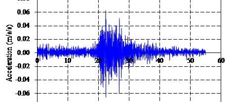

20181016新疆精河县5.4级地震破坏力分析
致谢和声明：
感谢中国地震台网中心为本研究提供数据支持。本分析仅供科研使用，具体灾情和灾损分析应根据现场调查情况确定。
一、地震情况简介
根据中国地震台网测定，北京时间2018年10月16日10点10分，新疆博尔塔拉州精河县发生5.4级地震，震中位于北纬44.19度，东经82.53度，震源深度10千米。
二、强震记录及分析
20181016新疆博尔塔拉州精河县5.4级地震获得了13条地震动。由于本次地震没有近场记录，可能低估地震的破坏力。典型地震记录分析如下：
65KTU台站位置为北纬44.43度，东经84.89度(图1)，记录到水平向地震动峰值加速度为11.2 cm/s2，竖直向地震动峰值加速度为6.5 cm/s2。该地震动与我国设计反应谱对比如图2、图3所示。

图1 65KTU台站位置

(a) EW方向

(b) NS方向

(c) UD方向
图2 65KTU台站地面运动记录

图3 65KTU台站地面运动记录反应谱
三、地震动对典型城市区域破坏能力分析
利用密布强震台网在震后获取的实时地震动信息，再结合城市抗震弹塑性分析，就可以得到地震发生后不同地点的建筑破坏情况，为抗震救灾决策提供科学支撑。图4为根据20181016新疆博尔塔拉州精河县5.4级地震震中附近范围内台站记录分析得到的建筑震害分布示意图。详细分析结果可以在电脑上查看http://www.luxinzheng.net/software/20181016Jinghe.html

图4 20181016新疆博尔塔拉州精河县5.4级地震不同台站地震记录破坏力分布图

徐永嘉

孙楚津
相关研究
长按识别二维码，关注我们的科研动态